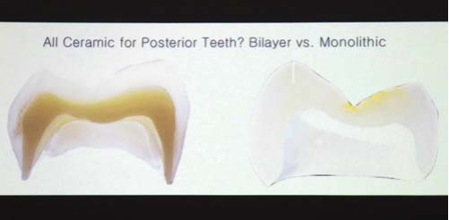
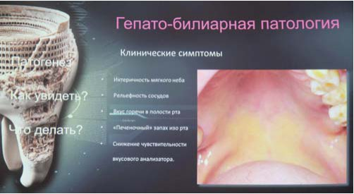
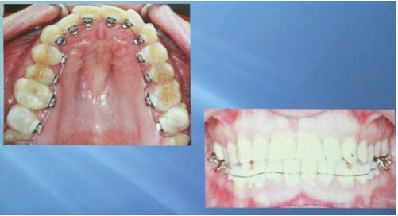
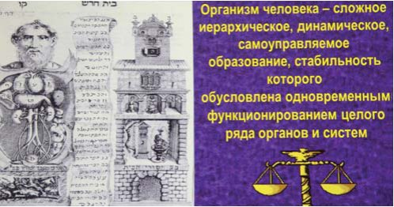
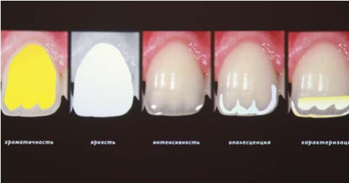
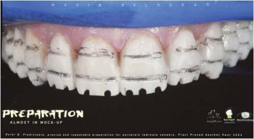
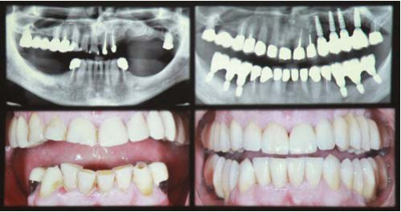
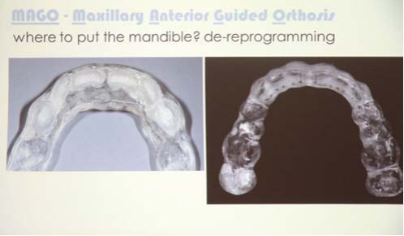
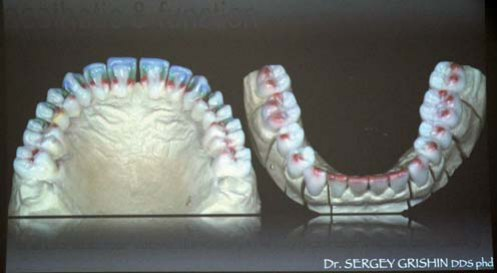
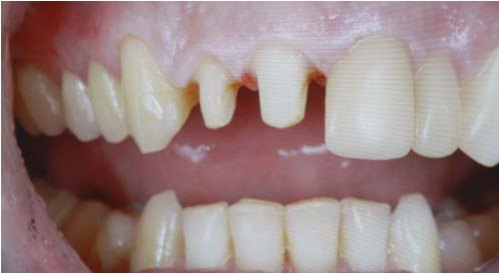

Конгреси · журнал «ДентАрт» 2014 №2 (75)
II Конгрес Української академії естетичної стоматології. Естетична стоматологія в ім'я здоров'я людини
THE II CONGRESS OF UKRAINIAN ACADEMY OF ESTHETIC DENTISTRY. ESTHETIC DENTISTRY FOR THE SAKE OF HUMAN'S HEALTH
13-14 грудня 2013 року в Полтаві відбувся Другий конгрес Української академії естетичної стоматології. Академія естетичної стоматології як міжнародний рух виникла у 1975 році, коли з ініціативи Рональда Гольдштейна було засновано Американську академію естетичної стоматології. Через 11 років була створена Європейська академія естетичної стоматології, а в 1994 році — Міжнародна федерація, яка об'єднала 29 академій з 22-х країн світу. У 2012 році, після багаторічної підготовки, створена Українська академія естетичної стоматології і 21 лютого в Чикаго була прийнята в Міжнародну федерацію естетичної стоматології. Українську академію естетичної стоматології заснували Мирослава Дрогомирецька, Мирон Угрин, Микола Бахуринський та Сергій Радлінський, останній є президентом на термін 2013-2014 рр., його каденція закінчується 1 листопада 2014 року. Президентом з 1 листопада 2014 р. до 2016 р. буде Микола Бахуринський. Академія допоможе лікарям у формуванні мультидисциплінарного підходу в лікуванні пацієнтів, що дозволить краще вирішувати естетичні проблеми.
Реставраційні матеріали: назад у майбутнє
Лекція під назвою «Назад у майбутнє» відображає прогрес стоматології з урахуванням 20-річного шляху. На диво, ті техніки, які здаються тільки-но винайденими, уже використовувалися раніше, а матеріали, які застосовувалися раніше, повертаються в майбутнє, яке вже настало.
У 1980-х роках для пломбування були доступні композити, амальгама, склоіономерні цементи. Амальгама, незважаючи на неестетичність, була бюджетною альтернативою. Композити, які на ринку вже близько 20 років, не застосовувалися в реставраціях бокових зубів через незадовільне склеювання з тканинами зуба. Одним з варіантів вибору були непрямі вкладки із золота, суцільнометалеві, металокерамічні і золоті коронки. До незаслужено забутих методів лікування належать золоті пломби. Золото є найкращим матеріалом для ротової порожнини і на сьогодні.
Але у 80-ті роки минулого століття багато людей уже замислювалося над питаннями естетики. Естетична революція почалася в Америці. Наприкінці 80-х і на початку 90-х американські стоматологи, ведучи профілактику, думали над тим, що можна було б запропонувати для поліпшення зовнішнього вигляду зубів. Родоначальником вінірів став Чарльз Пінкерс на початку минулого сторіччя. Перші вініри з кераміки та акрилової пластмаси виготовлялися для голлівудських зірок на час зйомок, і їх головною проблемою була фіксація і адгезія. Якщо до цієї техніки додати тотальне протравлювання і композитну фіксацію, ми отримаємо сучасну технологію, хоча про неї написано ще в 1983 році.
110 років тому Чарльз Ленд опублікував статтю про жакетні керамічні коронки. Але ця робота так і залишилася б дослідницькою, якби в середині 1980-х років не з'явилася можливість адекватної адгезії до тканин. Сучасна реклама люмінірів говорить про можливість отримання результату безпрепарувальним методом. Але ця філософія — просто маркетинговий хід, причому не новий, адже ще в 1983 році написано про виготовлення вінірів без препарування. Уже з 1987 року нам відомо головне: ми повинні залишатися в межах емалі. У 1980 році нам було простіше вибрати матеріал для непрямих конструкцій, ніж у 2013-му, коли є великий вибір матеріалів, різних за якістю і властивостями. Ми повинні мимоволі ставати хіміками та аналізувати властивості матеріалів, якими працюємо.

У класичній кераміці силікатний наповнювач має нерівномірну форму, у пресованій кераміці частинки більш рівні й рівномірні. Функція наповнювача полягає в запобіганні розтріскуванню кераміки. Нова спечена кераміка на основі оксиду алюмінію або оксиду цирконію практично не має скла, і тому її не потрібно додатково протравлювати плавиковою кислотою. Слід пам'ятати: чим більше наповнювача в кераміці, тим менш прозорою, але міцнішою вона стає, і навпаки, більша кількість скла робить кераміку більш природною на вигляд, але нетривкою.
Для нас не секрет, що будь-яке відновлення може бути неуспішним. Відколи зустрічаються як в безметалових конструкціях, так і на металокерамічних коронках та у коронках, де каркасом служить оксид цирконію.
При дослідженнях in vitro під дією жувального навантаження коронок з діоксиду цирконію та коронок з дисилікат літію коронка з дисилікат літію витримувала навантаження 1 млн циклів при навантаженні 1 тис. Н, коронка на основі діоксиду цирконію витримала 300 тис. циклів при навантаженні 300 Н. Усі відколи відбувалися в кераміці, а не в цирконієвій основі. Однак для відновлення передніх зубів краще використовувати кераміку І-макс, її можна розфарбувати і отримати високоестетичний результат. Незважаючи на запевнення виробника, що коронки з діоксиду цирконію не будуть сколюватися і монолітну конструкцію можна після розфарбовування застосовувати і на передніх зубах, зовнішній вигляд таких коронок не відповідає естетичним вимогам. До того ж матеріал дуже щільний, і це буде призводити до стирання антагоністів. Однак стирання антагоніста залежить не тільки від щільності матеріалу, з якого зроблена коронка антагоніста, але й від ступеня полірованості її поверхні. Одна з пропозицій лектора — застосування цільних монолітних коронок з діоксиду цирконію. До переваг таких конструкцій можна віднести відсутність сколів, менше препарування.
Чи є цирконієві коронки новим золотим стандартом? Цирконій поводиться щодо тканин зуба, як золото, впливає на антагоніст, як золото, полірується, як золото. Але рано говорити про віддалені результати, бо ця техніка аналізується лише протягом 8-ми місяців. Але технологія цільних цирконієвих коронок дуже популярна в Америці, має досвід робіт близько 2-х років, і сьогодні це стає трендом.
Клінічна стоматологія як основа естетичної тріади
«Ми говоримо про комплексне бачення проблем пацієнта, прагнення оцінювати і вдосконалювати естетику обличчя і усмішки пацієнта з урахуванням його психологічного та соматичного статусу» — ці слова Рональда Гольдштейна стали преамбулою лекції. Ми прийшли до того, що жодне стоматологічне лікування неможливе без урахування соматичного і психологічного статусу пацієнта. Гармонія краси і здоров'я, індивідуалізація образу, лікування не зубів, а пацієнта в цілому — ось основоположні принципи дисципліни естетичної стоматології. Естетична тріада — це рожева, біла, фонова естетика. Фонова естетика характеризує соматичний статус пацієнта, що його стоматологи сьогодні не можуть не враховувати.
Більшість пацієнтів має комплексні функціональні порушення травної системи. 46,4% стоматологічних пацієнтів поставлено діагноз захворювання печінки і жовчовивідних шляхів. Токсичні продукти, які при порушеній функції печінки надходять у порожнину рота, опосередковано діють на функцію слинних залоз. При первинному огляді завжди необхідно звертати увагу на атрофічну червону облямівку губ, злущування епітелію, глянцеві (лакові) губи, кандидоз, атипічність локалізації герпетичних висипань.
Окремо Світлана Дем'яненко виділила таку патологію, як патологічне стирання. Особливістю стирання є порушення кальцієвого обміну. Як правило, при хворобах печінки знижується утворення кісткової тканини і збільшується процес резорбції.

На сьогодні 10% населення України страждає патологією гепато-біліарної системи. Відзначається глобальне поширення гепатоцеребрального, гепатопульмонального, гепатокардіального синдрому, і в тому числі гепатоорального. Існує прямий зв'язок і залежність між порушеною функцією печінки і захворюваннями органів і тканин ротової порожнини. Після цього виникає оральний дисбіоз та розвиток усіх стоматологічних захворювань. Для України це актуально: третина населення має дисбіоз.
Застосування пробіотиків дозволяє нормалізувати ріст нормальної мікрофлори кишечника. Рекомендовані препарати — поліфенол винограду, Екстрадін інвіта, Енаант. Для лікування стоматиту широко застосовують препарат Катамаз. З метою збільшення локальної концентрації біологічно активних речовин пролонгованої дії розроблено мукоадгезивні лікувальні гелі та плівки. Мукоадгезивний гель у своєму складі містить пробіотик галсо, а адгезивна лікувальна плівка — лізоцим. Комплексний препарат Квертулін містить пробіотик інулін, який має антидисбіотичну дію, стимулює зростання пробіотичної мікрофлори, усуває явища дисбіозу. Гепатопротектор гварцетин, що має антиоксидантну і гепатопротекторну дію, у своєму складі має цитрат кальцію — це найбільш засвоюваний кальцій. Цей комплексний препарат є препаратом номер один на стоматологічному прийомі.
Естетика ортодонтичного лікування: від компромісу до невидимості
Завдяки можливостям складної техніки лінгвальної ортодонтії, яка стала доступною в останні роки, стоматологи і пацієнти отримали можливість контролювати естетику протягом усього лікування. Ортодонтія є невід'ємною частиною стоматологічної допомоги і давно вийшла за межі вирішення дентальних або зубоальвеолярних проблем, з її допомогою виконується нормалізація зубоальвеолярної оклюзії і рухів нижньої щелепи. Наслідком нашого лікування є збереження інтактних зубів і порятунок твердих зубних тканин від зайвого препарування, усунення вторинних деформацій. Безумовно, ортодонтична допомога як комплексне лікування позитивно впливає на загальні стоматологічні заходи. До звичної техніки належать брекети, які містяться з вестибулярної або щічної поверхні зубів, але не завжди задовольняють пацієнтів з естетичної точки зору. Нам би хотілося відновлювати функцію, а доводиться стикатися з тим, що сьогоднішнє суспільство диктує необхідність вирішувати естетичні питання. Нестандартність лінгвальної техніки — це маркетинговий хід. Крім естетики, жодних переваг ця техніка не несе. Запити естетично вимогливих пацієнтів набагато вищі, ніж при лікуванні іншою апаратурою, і реалізувати їх за допомогою іншої техніки, крім лінгвальної апаратури, вкрай важко. Пацієнти перед лікуванням повинні проходити функціональну діагностику і спеціальну психологічну підготовку. Перед тим як освоювати лінгвальну техніку, необхідно освоїти вестибулярну.

Починаючи із 70-х років, завдяки Курцу і його сподвижникам лінгвальна апаратура почала рух по світу. Якщо на початку епохи лінгвальної техніки ставлення до неї було досить скептичне, то нині це один з основних напрямків у лікуванні ортодонтичних пацієнтів.
Психосоматика естетики пародонту
Фізіологи зі світовим ім'ям стверджують: сучасна спеціалізація відводить від організму людини як цілого. У ХVII столітті при навчанні організм уявляли, як дім. По суті, це ієрархічно, динамічно самокероване утворення, стабільність якого зумовлена цілим рядом органів і систем і яке має найвищу ступінь саморегулювання. І іноді головне — не заважати організму самому відновитися. У теорії функціональних систем основне — це системна організація, яка починається з рівня метаболічного і закінчується рівнем психічним. За визначенням ВООЗ, «здоров'я — це стан повного фізичного, психічного і соціального благополуччя, а не лише відсутність хвороб і фізичних дефектів». Тому що компоненти здоров'я, в понятті фізіологів, — це наявність так званих функціональних резервів між функціонуванням органів і систем і здатністю організму адаптуватися до того, що відбувається із самою людиною. Коли виникає хвороба, людина обмежена у своїй свободі. Це, по суті, порушена адаптація. Хвороба завжди пов'язана з тим, що організм неспроможний забезпечувати ту життєдіяльність, яка складається в нових умовах, і досягати максимального результату.
Ми живемо в епоху, коли доводиться мати справу з поліморбідністю пацієнта. Що це означає? Дуже рідко захворювання розвивається саме по собі, у людини, як правило, букет захворювань.
Епідеміологія захворювань пародонту продовжує зростати, їх поширеність у віковому діапазоні 35-40 років становить 95%, зростає частота і тяжкість захворювань пародонту в осіб молодого віку. Ціла низка соматичних захворювань може супроводжуватися ушкодженнями тканин пародонту. Нині відомо близько 50 таких захворювань, які проявляються ураженням тканин пародонту зі стовідсотковою закономірністю. Чим важча форма і триваліший перебіг соматичного захворювання, тим більші генералізація, агресивність і тяжкість пародонтологічної патології. І, на жаль, хронічний процес у тканинах пародонту — це завжди джерело стоматогенних хроніоінтоксикації і сенсибілізації, вогнище для розвитку соматичних захворювань.
Чому сьогодні такий стан захворюваності тканин пародонту? Принцип психосоматичного лікування, в якому стверджується спільність і тілесного, і духовного, повинен бути основою лікування, реабілітації та профілактики. Тому що в основі лежить особистісний індивідуальний підхід до кожного пацієнта.

Наприкінці ХIХ століття батько психоаналізу З. Фрейд здійснив найбільше відкриття, яке дозволило з'єднати психологію і медицину. Він стверджував, що глибинні підсвідомі структури живуть за своїми законами. І стрес, який пережитий одного разу, зберігається в них і надалі може проявитися в різних захворюваннях, оскільки наше фізичне тіло схоже на запам’ятовуючу систему. Існує зв'язок між характером мислення, частинами тіла і проблемами фізичного здоров'я. Симптоми хвороби — це суто зовнішній прояв духовного нездоров'я. Тіло і дух — єдине ціле. Торкаючись такого поняття, як психосоматика і психосоматичні захворювання, згадаємо прабатька цього поняття Александера, який вивів так звану чиказьку сімку: есенціальна гіпертонія, виразкова хвороба 12-палої кишки, неспецифічний виразковий коліт, бронхіальна астма, тиреотоксикоз, ревматоїдний артрит, нейродерміт. Ми можемо з великою впевненістю стверджувати, що при всіх цих патологічних станах завжди уражений пародонт, причому це запально-дистрофічно генералізований процес у його тканинах.
Закономірності психосоматичної патології в клініці при захворюванні тканин пародонту: генералізований характер ураження, тяжкість пародонтиту визначається тяжкістю психосоматичної патології, виражена клініка і об'єктивна, і суб'єктивна, патологія швидко прогресує, загострення пов'язане із загостренням соматичної патології. Зміни в тканинах пародонту можуть передувати загостренню соматичної патології. Що є пусковим механізмом для розвитку патології? Чому один і той самий сильний подразник у однієї людини викликає емоційну реакцію і вісцеральні реакції, а в іншої вони взагалі можуть бути відсутні? Ми сьогодні маємо морфологічні підтвердження того, що при хронічних запальних захворюваннях травної системи первинно у тканинах періодонту йде запальний процес. При артеріальній гіпертензії первинно виникають дистрофічні зміни і незапальна резорбція кісткової тканини. У чому полягає доказовість психосоматичного роду захворювання? Потрібно довести, що в них бере участь емоційний стрес, і показати, що задіяна психічна травма, дізнатися докази ролі особистісних характеристик і переконатися, що цей патологічний процес має нейродистрофічну основу.
Сьогодні в медицині виділяють 5 основних хвороботворних факторів: космічно-планетарні, хімічні, фізичні, біологічні, соціальні. У сфері соціальних факторів стрес — один з головних. Хвороботворний патогенний фактор є тим неадекватним подразником, який виводить організм зі стану здоров'я. Що визначає неадекватність подразника? Це його сила дії, час дії і те, наскільки об'єкт його сприймає (індивідуальне сприйняття). Сьогодні стрес трактується як реакція організму на будь-який надзвичайний подразник.
Яка схема розвитку стресової реакції? Надзвичайний подразник активізує гіпоталамо-гіпофізарну, надниркову системи, які призводять до зміни функції органів і систем у процесі адаптації до цього подразника. Мішенню стресу є всі органи і системи, включаючи і ротову порожнину, в тому числі і тканини пародонту. Тактика стоматолога при веденні пацієнта з хворобами тканин пародонту на тлі соматичних захворювань: правильна нозологічна діагностика із з'ясуванням синдромного діагнозу; патогенетичне і симптоматичне лікування фахівцем вузького профілю; якісна професійна гігієна ротової порожнини зі складанням алгоритму індивідуального комплексу гігієни ротової порожнини; постійний контроль, раз на 4 місяці, з повторною мотивацією; санація ротової порожнини з контролем проксимальних поверхонь; вторинна і третинна профілактика наявних захворювань пародонту; мінімальна інвазія тканин, антибіотики за показаннями, індивідуальна тактика, якщо є кардіологічні проблеми.
Майбутнє пародонтології і всієї медицини — в системному підході до діагностики, лікування та профілактики.
Відтворення оптичних властивостей тканин зуба
Ідеального матеріалу для відновлення передніх зубів немає. Потрібно використовувати композитні і керамічні реставрації за показаннями. Головною концепцією будь-якого лікаря завжди була мінімально інвазивна технологія, адгезивна стоматологія та максимально консервативний підхід при виборі лікування. Перше питання, яке ми повинні ставити перед собою: скільки необхідно прибрати здорових тканин зуба? Для діагностики, документування та визначення кольору виконується серія фотознімків у поляризуючому світлі, що дозволяє зняти відблиск поверхні, сірий фон 18, дає можливість вивчити основний відтінок і побачити додаткові елементи. При реставрації можливе як непряме воскове моделювання, так і виконання мокап безпосередньо у ротовій порожнині з подальшою роботою з використанням силіконового ключа. Усі реставраційні роботи повинні виконуватися під ізоляцією. Виготовлення силіконового ключа допомагає задати правильну анатомію, корекція по оклюзії мінімальна або не потрібна. Адже слід пам'ятати, що відтворення правильної анатомії — єдина профілактика сколів. Реставрація повинна бути функціональною, а не бути лише пломбою, що закриває дефект. Побудову в техніці стратифікації важливо контролювати за фотографією або за заданим макетом. Дегідратація зуба не дозволяє орієнтуватися на колір і оптичні елементи, тому необхідно визначити колір і вирішити, які відтінки нам потрібні, завчасно, також обов'язковий контрольний візит через 7 днів після гідратації тканин для оцінки остаточного зовнішнього вигляду реставрації. Нашим завданням є відновлення з найменшою біологічною ціною. Важливо пам'ятати: ми відтворюємо не колір зуба, а його оптичні ефекти. Це твердження може здатися абсурдним, але кольору не існує. Колір — це наше сприйняття світлового променя.

У стоматології за основу була обрана колірна схема Манселла, який був художником і систематизував колір у дуже просту шкалу. Основні кольори — це тільки відтінки А, які зустрічаються у 80% випадків, і відтінки В, які зустрічаються у 20%, кольори D і С не існують тому, що це ті ж самі відтінки, але з іншим параметром яскравості і прозорості. Для того щоб виконати реставрацію, потрібно знати додаткові елементи кольору. Лоренцо Ваніні у 1995 році визначив 5 елементів, що характеризують зовнішній вигляд зуба:
- хроматичність — основний колір зуба, об'єднаність відтінку і насиченості, яка визначається дентинними відтінками;
- яскравість — рівень білого, це регулюється відтінками емалі;
- інтенсивність — білі включення на поверхні емалі, елементами характеризації;
- опалесценція — ефекти напівпрозорості, підповерхневими барвниками;
- характеризація — відтінками емалі та дентину.
Тонкощі реставрації легко освоїти, потрібно перестати дивитися і почати бачити, так підсумував свій виступ Олександр Фецич.
Естетичні аспекти мікростоматології
Принципово важливою особливістю сучасної стоматології є мінімальна інвазія, і завдяки сьогоднішньому розвитку оптичних систем, таких як операційний мікроскоп, бінокулярні лупи, ми можемо лікувати пацієнтів найбільш консервативним способом.
Основне завдання стоматолога перед трансформацією усмішки — максимально якісно зібрати всю інформацію і побажання пацієнта. Лікарі, котрі спеціалізуються в естетичній стоматології, повинні застосовувати фотореєстрацію у своїй практиці — це насамперед дозволяє виконати планування, провести роботу над власними помилками, налагодити комунікацію із зуботехнічною лабораторією, а також між фахівцями різного рангу і ланки, допомогти в мотивації пацієнта.
Протокол фотореєстрації дозволяє зібрати повну серію фото для аналізу:
- фотографія особи в розслабленому стані дозволяє визначити пропорції обличчя пацієнта;
- фото з природною усмішкою дозволяє визначити позицію нижньої губи і вираженість щічних коридорів;
- фото з широкою (неприродною) усмішкою потрібне при плануванні цифрового дизайну усмішки для визначення ступеня відкриття ясенного краю;
- фотографії в півоберта демонструють нахил центральних зубів щодо нижньої губи;
- фото в розслабленому стані з напіввідкритим ротом дозволяє проаналізувати оголення ріжучих країв різців.

При визначенні позиції центральних різців можна використовувати теорію Ф. Спіра «Складання плану лікування згідно з обличчям пацієнта залежно від вікової категорії». Власне довжину центральних зубів можна визначити за концепцією Крістіана Кочмана цифрового дизайну усмішки, в основі якого лежить теорія Спіра.
У відповідності з цією концепцією вже на фото за допомогою комп'ютерних програм ми можемо візуалізувати майбутній результат. Оскільки естетика — суб'єктивне поняття, наше бачення необхідно співвіднести з вимогами пацієнта ще на етапах планування та виробити стратегію лікування. Також у цій концепції ми можемо співпрацювати з лабораторією, зубним техніком, продемонструвавши йому вже змодельований нами за допомогою DSD зубний ряд, де чітко вказано, наскільки необхідно подовжити зуби, і за необхідності внести корективи.
У зуботехнічній лабораторії, маючи в арсеналі комплект фотографій і зліпки з прикусними реєстраторами в центральному співвідношенні, технік для перенесення воскового моделювання в порожнину рота виконує прозорий шаблон для майбутнього мокапа, шаблони для препарування і шаблон для виготовлення тимчасових конструкцій. Прозорий шаблон дозволяє виконати «примірку» усмішки пацієнта, що сильно мотивує пацієнта до подальшого лікування.
Стоматологія перестає бути медициною як такою, наші дії повинні бути обґрунтовані фінансово, психологічно, часозатратно, з точки зору інвазивності лікування, навичок оператора і команди, з якою він співпрацює.
Методи лікування, які є в нашому арсеналі: ортодонтичні, пряма композитна реставрація, ортопедичні, з виготовленням повних, тричвертних коронок або керамічних вінірів, причому всі вони повинні виконуватися, виходячи з першорядності мінімальної інвазії, доцільності.
Хірургічна складова у досягненні стоматологічної естетики
Успіху в естетичній стоматології та стабільності важко досягти без адекватної хірургічної стоматологічної діяльності.
Тривалий час вважалося, що проведення ортопедичного протезування допускає великий компроміс щодо постановки імплантатів у необхідному положенні. У минулому прощалися деякі проблеми естетичного характеру в дизайні ортопедичної конструкції. Вони пояснювалися недостатністю м'яких і кісткових структур, надмірною вертикальною відстанню між щелепами, неможливістю поставити імплантат у проекції видаленого зуба через дефіцит кісткової підтримки. Сьогодні пацієнти і в складних вихідних умовах вимагають забезпечити належну естетику ортопедичного лікування. Але забезпечити її не так просто, хоча для цього існує багато технологічних можливостей.
Вихідним базовим принципом, від якого необхідно відштовхуватися, є поняття біологічної ширини і біологічної зони. Основна вимога до відновлення — збереження морфологічних і анатомічних характеристик тканин. Перед початком лікування необхідне відновлення втрачених тканин. Ці правила є важливими при реставрації зубних рядів або окремих зубів з опорою на зубні імплантати.
Екстракцію зуба слід проводити дуже обережно, без пошкодження вестибулярної і піднебінної стінок. Далі має йти правильне позиціонування зубного імплантата, це забезпечується різними хірургічними навігаційними системами і приладами. Але найпростішим і найефективнішим є використання хірургічного шаблону. У видимій ділянці необхідна процедура для підтримки не лише твердих, але і м'яких тканин, тому після операції на тимчасовому абатменті фіксується тимчасова коронка. Точність припасування такої коронки і акуратність її виготовлення забезпечують підтримку м'яких тканин і швидке, без ускладнень, загоєння тканин. Бажано, щоб така коронка фіксувалася способом закручування — для запобігання потраплянню цементу, що може ускладнити післяопераційне загоєння.
Постійна реставрація може виготовлятися різними техніками, але гвинтова фіксація коронки дозволяє виконувати це швидко, нетравматично і безпечно з точки зору захисту від потрапляння цементу в місце з'єднання абатмена і коронки зуба.

Доповідач і співавтори розробили простий і дуже чіткий клінічний протокол, який передбачає одномоментне видалення всіх зубів на щелепі, позиціонування зубних імплантатів з використанням керамічного шаблону і обов'язковим візуальним контролем, з формуванням біологічної ширини не менше 2-3 мм між вестибулярною стінкою та імплантатом. Навіть якщо в естетичній зоні достатня товщина і ширина кісткової тканини, хороший контур м'яких тканин, це не означає, що можна знехтувати аугментацією вестибулярної стінки.
Хірургічний шаблон для позиціонування імплантатів використовується як реєстратор оклюзії. Адже після тривалої операції у пацієнта не так просто зняти параметри оклюзії. Він же використовується як індивідуальна ложка для пацієнта. На третю добу, незважаючи на набряклість м'яких тканин, може фіксуватися тимчасова конструкція, що істотно поліпшує функціональний та естетичний стан. Якщо не дати негайне навантаження на імплантати, не проводити аугментацію вестибулярної стінки, можна втратити обсяг м'яких тканин.
Хірургічні методи дуже прості, зрозумілі і доступні — це збереження анатомії м'яких тканин, правильне позиціонування імплантата, утворення достатньої кількості тканини з вестибулярного боку імплантата або зуба.
Біоестетична WAX/CAM реставрація
Біологія — це непрогнозована галузь. І починаючи лікування складних випадків, слід враховувати два аспекти: нам потрібна карта, щоб не втратити напрямок, і варіанти вирішення проблем. Щоб упоратися із завданням відновлення, ми повинні дотримуватися функціональних принципів і вибирати матеріал залежно від реконструктивного методу. У першу чергу враховуються суб'єктивні дані, скарги та вимоги пацієнта, його очікування та обмеження. Про об'єктивні дані свідчать клінічні та інструментальні методи обстеження, які дозволяють правильно проаналізувати, діагностувати і спланувати подальші кроки.
Представлений клінічний випадок пацієнта, який тривалий час вживав велику кількість газованих напоїв, зі стиранням зубів і перевагою жування на одному боці. У першу чергу при об'єктивному обстеженні виконується фотореєстрація — серії мікро- і макрофото. Це дуже важливо для динамічного спостереження в подальшому і допомагає при аналізі проведеного обстеження та плануванні, комунікації з лабораторією, співдіагностиці, юридичному захисті. А також можна провести 3D зйомку, і це допоможе оглянути пацієнта в трьох вимірах.
Карта для подальшого планування втручання має враховувати 4 позиції: естетику, функцію, структуру, біологію. Естетика завжди стоїть на першому місці. Без заглиблення в деталі кожної позиції зупинимося на найважливіших факторах. З точки зору естетики важливим є положення центральних зубів. Біоестетична оцінка дає можливість зрозуміти, де правильно розташувати ріжучий край верхніх центральних різців, оцінивши фонетичні проби і те, якої форми і пропорції мають бути зуби. Наступний крок — воскове моделювання, яке можна доповнити цифровим моделюванням з додатковим скануванням тканин усього обличчя. Така оцінка дає можливість спланувати підходи до лікування: це можуть бути невеликі реставрації або серйозні реконструктивні втручання, ортодонтичні методики, імплантація аж до щелепно-лицьової хірургії.

Для стабільності положення нижньої щелепи Вольфганг Кнупфер запропонував застосовувати апарат, який називається «Ману» і має в бічній ділянці дуже тонкі точки контакту. Він необхідний для депрограмування рухів нижньої щелепи щодо верхньої. Цей апарат допоможе перевести рухи з горизонтальних у вертикальні — для запобігання подальшому стиранню. Центральну оклюзію необхідно перевіряти кілька разів різними способами до того моменту, доки дані будуть повністю збігатися. Це важливо не тільки для дизайну оклюзійної поверхні і відновлення форми стертих поверхонь, але й для досягнення правильного співвідношення щелеп з правильним положенням суглобового горбка без зміщень.
При виборі матеріалів для реконструкції необхідно враховувати, що матеріал повинен бути надійним, міцним при невеликій товщині і не дуже дорогим. Вибір автора більше схиляється до композитних нанокерамічних матеріалів для непрямих конструкцій, таких як Лава Ультимейт — керамокомпозит, наповнений на 80% оксидом цирконію. Препарування бічних зубів по перенесеному мокапу дозволяє виконувати його дуже щадно. Усі зуби препаруються як на верхній, так і на нижній щелепах, що дозволяє повністю реконструювати зубні ряди. Моделі скануються і відтворюються в цифровому дизайні. Як результат — повне змикання в центральному співвідношенні, правильні напрямні (різцевий шлях, ікловий рух). Тотальне відновлення при правильному підході дозволяє провести повну реабілітацію пацієнтів без додаткових дорогих апаратів для функціональної діагностики і домогтися гарного результату в рамках компенсаторних можливостей організму.
Цифрові технології та технологічна симпліфікація у тотальній реконструкції
Навіть при сучасній науковій і клінічній підготовці у лікарів виникає багато питань з діагностики та реалізації плану лікування. Найбільш успішним є підхід, який передбачає наявність знань як у прямій, так і в непрямий реставрації, уявлення про етапи зуботехнічної частини лікування.
Дії лікаря повинні бути послідовними і дуже чіткими. Адже будь-які маніпуляції у ротовій порожнині дуже сильно відбиваються на суглобі і м'язах. Низка маніпуляцій дозволить провести аналіз вихідної ситуації, адже естетично і оклюзивно один і той самий пацієнт — це різна клінічна картина, зміниться зовнішній вигляд пацієнта, співвідношення і положення суглоба. Тому мати спонтанний підхід до реконструкції оклюзії дуже небезпечно.
У поданому лектором клінічному прикладі з патологічним стиранням на фото у пацієнта виражений тонус мімічної мускулатури, підвернуті губи і натягнута посмішка, занижена третина обличчя. Ситуація в ротовій порожнині: високе стирання, відколи по ріжучому краю, відсутність двох молярів, при цьому бічні зуби досить добре збереглися, є реставрації. Бічні зуби стерті менше, ніж фронтальна група. Можна припустити парафункціональні рухи, які призводять до стертості зубів і говорять про неправильне функціонування.

Зібраний повний фотостатус пацієнта дозволяє визначити і структурні ураження зубів, і дентальні класи. У документації цього пацієнта близько 700 фотографій. У практиці Сергія Гришина мультимедійна карта заповнюється на кожного пацієнта. Обов'язково відливаються моделі, які реєструються в артикуляторі в центральному співвідношенні.
Це простий метод, який дозволяє на найпершому етапі зрозуміти, в який бік може зрушитися нижня щелепа після функціональної терапії. При бічному зміщенні головки суглоба можуть зміщуватися і обертатися.
Щоб визначити функціональну стабільність, необхідно провести аналіз по аксіоорбітальній площині. Часто ми можемо зіткнутися зі зміщенням нахилу фронтальної площини, що може бути причиною стирання передніх зубів. Також досить інформативною є пальпація переднього пучка скроневого м'яза, жувального, медіального і латерального крилопіднебінних м'язів.
Для того, щоб визначити, наскільки пацієнт втратив висоту в нижній третині, можна використовувати різні методи, один з них — цефалометрія, яка дозволяє з'ясувати положення нижньої і верхньої щелеп, визначити скелетарний клас, подивитися співвідношення різців і тільки після цього говорити про шляхи компенсації конкретного пацієнта. Для того, щоб відпрацювати рухи нижньої щелепи, можна провести сплінт-терапію, яка дозволить визначити позицію нижньої щелепи щодо верхньої.
У клініці автор використовує САD/САМ технологію для того, щоб перевести мануальне воскове моделювання в машину і потім реалізувати його в керамічних реставраціях. Є кілька елементів, які потрібно враховувати: позиції виростків у суглобі, висоту прикусу, нахил оклюзійної площини, криві Вілсона і Шпеє. По закінченні моделювання воску можна практично говорити і про успішне завершення клінічного випадку. Саме препарування зубів проводиться мінімально, повністю над яснами, без занурення в сулькус.
Постійні конструкції виточуються блоком, і опісля лише допрацьовуються контактні поверхні. Інтеграція непрямих конструкцій у зубощелепну систему на високому рівні вимоглива вже на етапах діагностики, збору даних і визначення співвідношень щелеп і з розвитком цифрових технологій дає можливість навіть попереднє воскове моделювання виконувати на високоточному рівні, який буде втілено у постійних конструкціях.
Майстер-технік чи CAD/CAM — функціональність і естетичність?
На багатьох конференціях з ортопедичної стоматології можна почути такі питання: «Що краще: CAD/CAM чи зубний технік?» Цифрові технології заполонили всю нашу практику. Для визначення, яка технологія краща, була виконана непряма реставрація пацієнтові різними техніками. Перший спосіб класичний, зі зняттям традиційних відтисків, отриманням звичайної моделі, виготовленням пресованої кераміки. Другий спосіб — CAD/CAM технологія, але у двох варіантах виготовлення. Компанія «Сірона» пропонує багато варіантів виконання: одним з варіантів відновлення була обрана програма, яка самостійно моделює форму і обрізує конструкцію; другий — коли програма виконує розрахунок і редукування, а технік моделює фінішний дизайн. Оцінювалися зручність роботи, якість прилягання і моделювання, але головним критерієм залишалися переваги пацієнта. Початкова клінічна ситуація була досить складною: коронки на окремих зубах, піднебінне положення деяких зубів, старі реставрації, металеві вкладки, глибоке різцеве перекриття. Один відтиск виконаний цифровою «Сірона ін коннект», другий був отриманий методом подвійного відтиску силіконовим матеріалом.
Після примірювання монолітної конструкції з пресованої кераміки пацієнт залишився задоволений. У CAD/CAM використовувалася польовошпатна кераміка, яка має поліхромні блоки, різних відтінків на різних ділянках. За рахунок позиціонування в цьому блоці можна отримувати різну ступінь прозорості з різним ступенем нашарування прозорого шару на саму коронку. Виготовлення кожної коронки займало близько 15 хв. Якість робіт була високою і з досить гарним приляганням. При виконанні конструкції в мануальній техніці зубним техніком естетичність конструкції вища, реставрація має набагато живіший вигляд, відчувається індивідуальність і почерк людини, яка її виконувала.

Перевагами цифрової технології є висока точність виконання, швидкість, можливість збереження даних роботи і, найголовніше, — нівелювання поняття часу і відстані. «Для мене як власника лабораторії, — зазначив Михайло Дроб’язго, — завжди стояло питання, у що інвестувати? У ручну чи в механізовану працю? У зубних техніків інвестицій вкладається не менше, ніж у CAD/CAM технології. По-моєму, ми зобов'язані мати в арсеналі обидві методики».
Якщо пацієнт не може чекати виконання робіт техніком, варіантом вибору є CAD/CAM технологія. Слід зазначити: посадка трьох робіт була ідентичною, проте точність проксимальних контактів на CAD/CAM вища, ніж у зубного техніка, робота по прикусу з CAD/CAM простіше. Мануальна техніка відновлення вимагає від лікаря більшої уваги і більшого докладання зусиль. Пацієнт обрав комп'ютерний варіант, индивідуалізований зубним техніком. Це наштовхує на думку, що ми, перебуваючи в запалі амбіцій, можемо мотивувати пацієнта на те, що йому не потрібне і не подобається.
Також під час конгресу відбулося обговорення клінічного випадку, що його представив Володимир Горохівський (Одеса), в якому розглядався приклад вирішення проблеми генералізованої стертості в умовах муніципальної медицини і який викликав бурхливу дискусію в залі.
На закінчення конгресу Сергій Радлінський провів конференцію про поточний стан справ Української академії естетичної стоматології. Він висловив пропозицію про проведення наступного конгресу в Одесі. Також Сергій Радлінський запропонував проводити сезонні одноденні сесії, причому такі сесії можуть бути регіональними. Від усіх членів та слухачів УАЕС залежить успішність її діяльності.